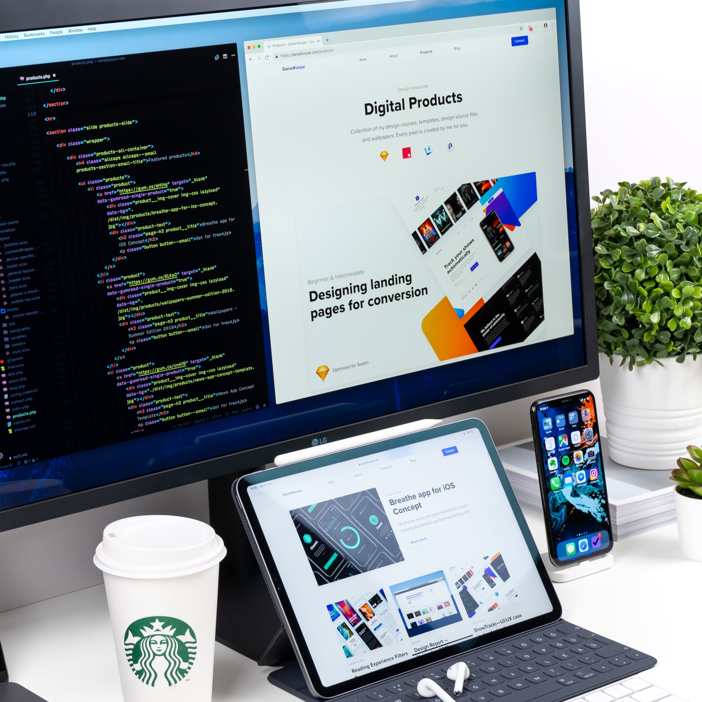
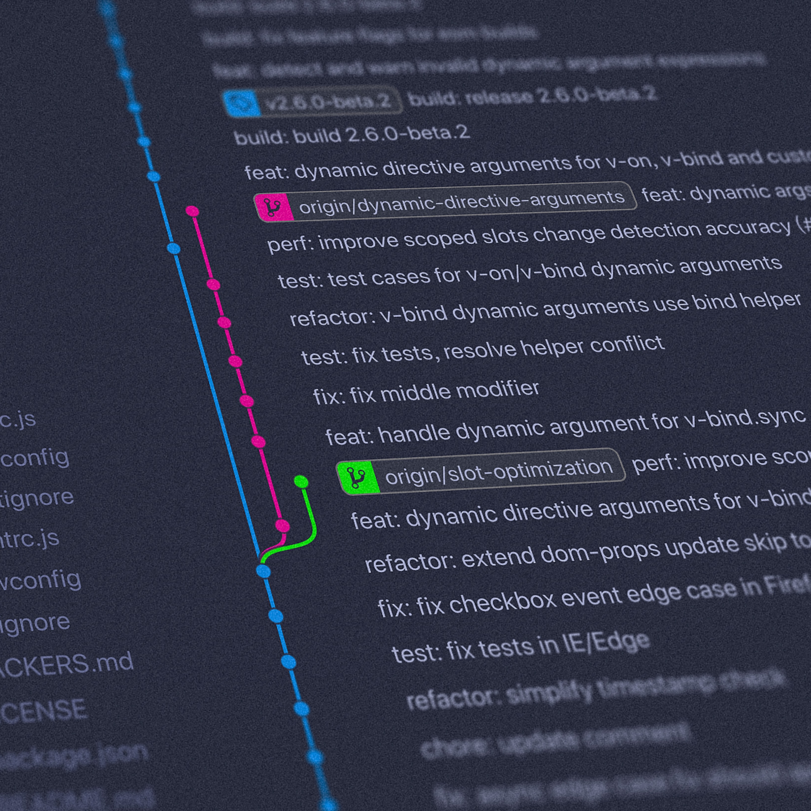

I am Mayin Wu
A frontend engineer
Hi，我是吳敏慈，好奇心旺盛，喜歡觀察生活中的的各種事物，在成功大學資訊工程研究所取得碩士學位，研究主題是深度學習在攝影上的應用。
三年工作經驗之軟體工程師，過去主要職務為網路程式設計與Windows視窗軟體開發，為公司新部門研究多種工業4.0相關技術，制定socket client-server基底與以MVVM架構設計之WPF介面等基底程式。具有尋找並解決問題的獨立開發能力，對程式碼品質有一定的堅持並有良好的註解撰寫習慣。
在上一份工作開發Windows視窗程式時，對於如何製作出好看且方便使用的介面產生了興趣，因此開始自學前端相關技術，目前已學習了HTML, CSS, Javascript等技術，未來希望能夠作為一個前端工程師，與時俱進的吸收新知識，做出更多兼具功能與美觀，讓我們生活更加美好的產品。
Skills

 HTML
HTML
 CSS
CSS
 Javascript
Javascript
Frontend
Programming Language

 Git
Git
 VS Code
VS Code
 Visual Studio
Visual Studio
Tools
Work Experience
軟體工程師 昇士達科技股份有限公司
2019.04 - 2022.07
網路程式開發
- 制訂公司基底client-server socket TCP程式，可穩定執行並迅速偵測各種網路斷線情況並重連
- Protocol encoder\decoder基底模組開發，可延伸為不同的protocol供client-server使用
- 多廠牌PLC通訊協議解析，並開發專用API
- The Hermes Standard服務開發，整合多client-server模組，並與自動化工程師合作進行硬體設備點位及暫存器交換，以控制產線生產流程
- JSON、XML資料序列化及反序列化，以及資料結構轉換
Windows視窗程式開發
- 與PM一同跟客戶開會，討論工業4.0專案功能及問題，進行產品架構規劃、開發與維護
- 制訂公司MVVM之WPF基底架構，供多專案快速開發或修改使用
- 以ResourceDictionary進行介面中英文切換
- 使用NLog進行程式運作及錯誤紀錄/li>
Education
M.S. in Computer Science, National Cheng Kung University
2015.09 - 2018.06
- "High-level semantic photographic composition analysis and understanding with deep neural networks." 2017 IEEE International Conference on Multimedia & Expo Workshops (ICMEW). IEEE, 2017.
- 多媒體學程認證
B.S. in Computer Science, National Chung Cheng University
2011.09 - 2015.06
- "Object-based tilt-shift photography." Consumer Electronics-Taiwan (ICCE-TW), 2015 IEEE International Conference on. IEEE, 2015.
- 2012年 校內南區大專院校程式設計競賽校內團體賽第三名